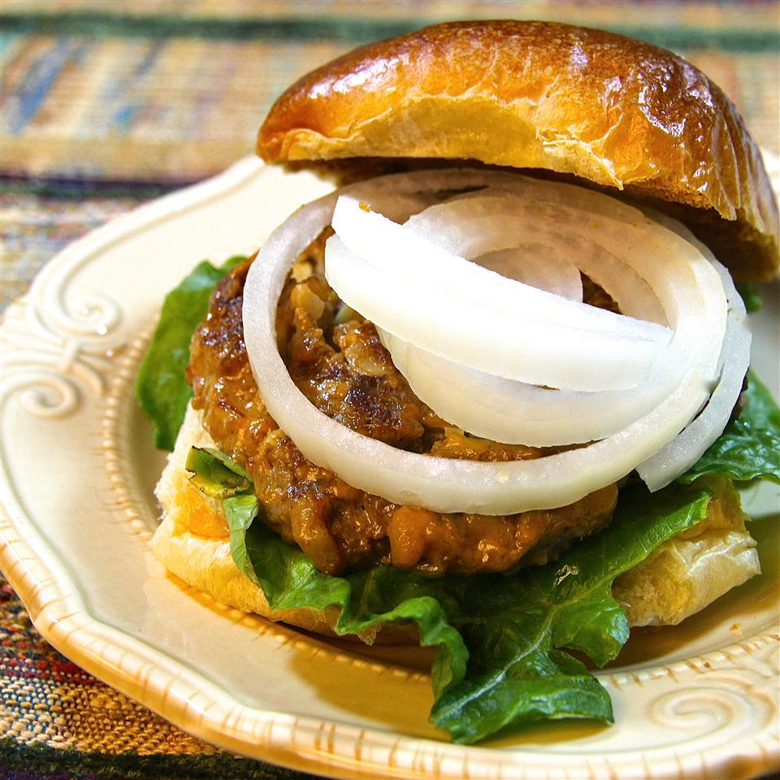

Chinese-Style Cheeseburger

Best Chinese-Style Chesseburguer ever
These are great cheeseburgers with a Chinese flair. I use Chinese-style mustard and serve them on some lightly buttered and toasted hamburger buns. Try substituting teriyaki sauce for the soy sauce, too!
Ingredients
- 1 pound ground beef
- ¾ cup chopped water chestnuts
- ¾ cup cubed Cheddar cheese
- 1 onion, finely chopped
- 2 teaspoons chile sauce
- 2 teaspoons prepared mustard
- 3 teaspoons soy sauce
Steps
- In a large bowl, combine the ground beef, water chestnuts, cheese, onion, chile sauce, mustard and soy sauce. Mix together well and form into 6 patties.
- Using a griddle or skillet, cook the patties over medium heat for about 5 minutes per side, or to desired doneness.